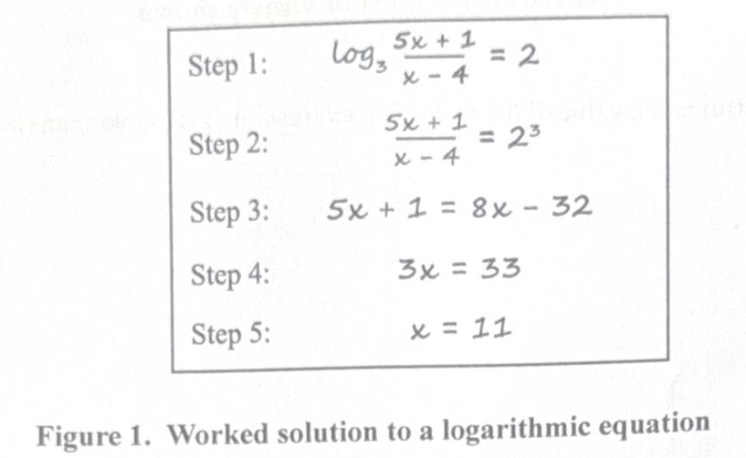
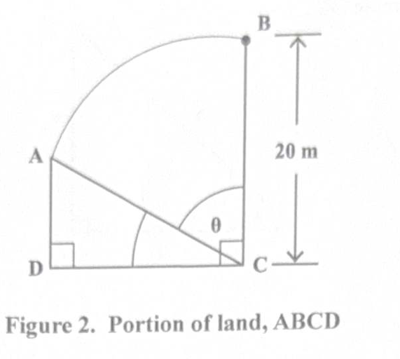
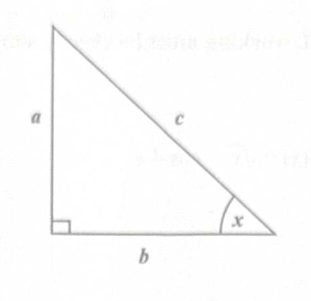
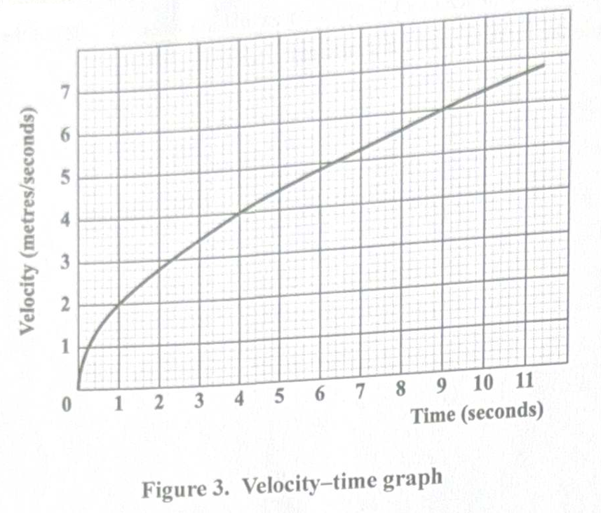
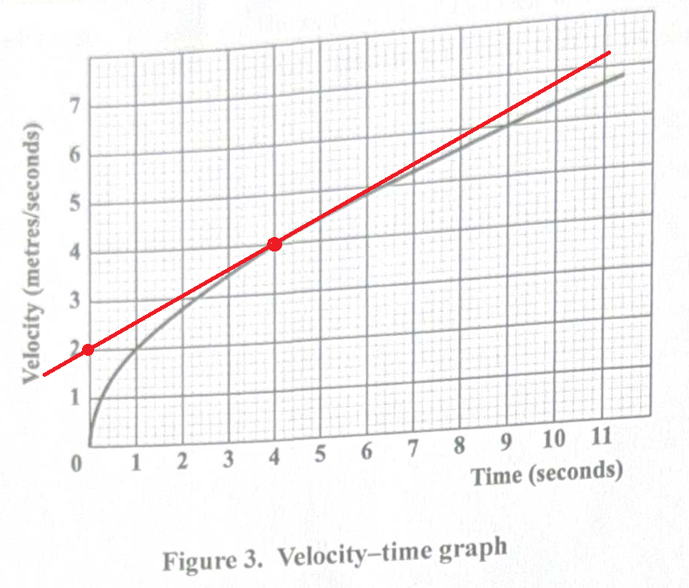

CSEC Examination: Additional Mathematics: Paper 02: General Proficiency
The Joy of the Teacher is the Success of the Students. – Samuel Chukwuemeka
Welcome to Our Site
I greet you this day,
These are the solutions to the CSEC Additional Mathematics Paper 02 questions.
Please review the Formulas, rules/laws, and theorems on the website for each topic as applicable.
If time permits and there is sufficient interest, video solutions may be provided. Please subscribe to the
YouTube channel to be notified
of upcoming livestreams.
You are welcome to ask questions during the video livestreams.
If you find these resources valuable and if any of these resources were helpful in your passing the
Mathematics tests/exams, please consider making a donation:
Cash App: $ExamsSuccess or
cash.app/ExamsSuccess
PayPal: @ExamsSuccess or
PayPal.me/ExamsSuccess
Venmo: @ExamsSuccess or
Venmo.com/u/ExamsSuccess
Your donation is appreciated.
Comments, ideas, areas of improvement, questions, and constructive
criticisms are welcome.
Feel free to contact me. Please be positive in your message.
I wish you the best.
Thank you.
CARIBBEAN SECONDARY EDUCATION CERTIFICATE EXAMINATION
ADDITIONAL MATHEMATICS
Time: 2 hours 40 minutes
READ THE FOLLOWING INSTRUCTIONS CAREFULLY.
(1.) This paper consists of SIX questions. Answer ALL questions.
(2.) Write your answers in the spaces provided in this booklet.
(3.) Do NOT write in the margins.
(4.) A list of formulae is provided on page 4 of this booklet.
(5.) If you need to rewrite any answer and there is not enough space to do so on the original page, you must use
the extra page(s) provided at the back of this booklet.
Remember to draw a line through your original answer.
(6.) If you use the extra page(s), you MUST write the question number clearly in the box provided at the top
of the extra page(s) and, where relevant, include the question part beside the answer.
Formula Sheet: List of Formulae
Part 1:Part 2:
The student made an error in the working which resulted in an incorrect solution.

Identify the step in which the student made the initial error and correctly rework the solution from that step.
Step with initial error ....................................................
(d.) Quadratic Equations: (i.) Determine the values of m for which the equation $x^2 + (m - 1)x + 2m + 3 = 0$ has equal roots.
(ii.) Hence, determine the value of x that satisfies the equation.
$ (a.) \\[3ex] \dfrac{8}{\sqrt{3}} - \dfrac{5}{\sqrt{27}} \\[5ex] ............................................. \\[3ex] \sqrt{27} \\[3ex] = \sqrt{9 \cdot 3} \\[3ex] = \sqrt{9} \cdot \sqrt{3} \\[3ex] = 3\sqrt{3} \\[3ex] ............................................. \\[3ex] = \dfrac{8}{\sqrt{3}} - \dfrac{5}{3\sqrt{3}} \\[5ex] = \dfrac{24 - 5}{3\sqrt{3}} \\[5ex] = \dfrac{19}{3\sqrt{3}} \\[5ex] = \dfrac{19}{3\sqrt{3}} \cdot \dfrac{\sqrt{3}}{\sqrt{3}} \\[5ex] = \dfrac{19\sqrt{3}}{9} \\[5ex] (b.) \\[3ex] x^4 - 29x^2 + 100 \\[3ex] ............................................. \\[3ex] 100 \cdot x^4 = 100x^4 \\[3ex] \text{Factors are: } -25x^2 \text{ and } -4x^2 \\[3ex] ............................................. \\[3ex] x^4 - 25x^2 - 4x^2 + 100 \\[3ex] x^2(x^2 - 25) - 4(x^2 - 25) \\[3ex] (x^2 - 25)(x^2 - 4) \\[3ex] (x^2 - 5^2)(x^2 - 2^2) \\[3ex] (x + 5)(x - 5)(x + 2)(x - 2) \quad\dots\text{Difference of Two Squares} \\[3ex] $ (c.)
Step with initial error is Step 2: $\dfrac{5x + 1}{x - 4} = 2^3$
Correcting the step and working to get the solution:
$ \dfrac{5x + 1}{x - 4} = 3^2 \quad\dots\text{Exponent–Logarithm Relationship} \\[5ex] 5x + 1 = 9(x - 4) \\[3ex] 5x + 1 = 9x - 36 \\[3ex] 1 + 36 = 9x - 5x \\[3ex] 4x = 37 \\[3ex] x = \dfrac{37}{4} \\[5ex] $ Check
| LHS | RHS |
|---|---|
| $ \log_3{(5x + 1)} - \log_3{(x - 4)} \\[5ex] = \log_3{\left[\dfrac{5x + 1}{x - 4}\right]} \quad\dots\text{Law 2 Log} \\[5ex] ......................................... \\[3ex] 5x + 1 \\[3ex] = 5\left({\dfrac{37}{4}}\right) + 1 \\[5ex] = \dfrac{185}{4} + \dfrac{4}{4} \\[5ex] = \dfrac{189}{4} \\[5ex] x - 4 \\[3ex] = \dfrac{37}{4} - 4 \\[5ex] = \dfrac{37}{4} - \dfrac{16}{4} \\[5ex] = \dfrac{21}{4} \\[5ex] \dfrac{189}{4} \div \dfrac{21}{4} \\[5ex] = \dfrac{189}{4} * \dfrac{4}{21} \\[5ex] = 9 \\[3ex] ......................................... \\[3ex] = \log_3{9} \\[3ex] = \log_3{3^2} \\[3ex] = 2 * \log_3{3} \quad\dots\text{Law 5 Log} \\[3ex] = 2 * 1 \quad\dots\text{Law 4 Log} \\[3ex] = 2 $ | $2$ |
$ (d.) (i.) \\[3ex] x^2 + (m - 1)x + 2m + 3 = 0 \\[3ex] \text{Compare to the standard form: } ax^2 + bx + c = 0 \\[3ex] a = 1 \\[3ex] b = m - 1 \\[3ex] c = 2m + 3 \\[3ex] \text{Discriminant} = b^2 - 4ac \\[3ex] = (m - 1)^2 - 4(1)(2m + 3) \\[3ex] = (m - 1)(m - 1) - 4(2m + 3) \\[3ex] = m^2 - m - m + 1 - 8m - 12 \\[3ex] = m^2 - 10m - 11 \\[3ex] $ Equal roots implies that the discriminant must be zero.
$ m^2 - 10m - 11 = 0 \\[3ex] \text{Factors are: } 1m \text{ and } -11m \\[3ex] \text{Using the shortcut:} \\[3ex] (m + 1)(m - 11) = 0 \\[3ex] m + 1 = 0 \hspace{2em}{or}\hspace{2em} m - 11 = 0 \\[3ex] m = -1 \hspace{3em}{or}\hspace{3em} m = 11 \\[5ex] (ii.) \\[3ex] \text{When } m = -1 \\[3ex] x^2 + (-1 - 1)x + 2(-1) + 3 = 0 \\[3ex] x^2 - 2x + -2 + 3 = 0 \\[3ex] x^2 - 2x + 1 = 0 \\[3ex] (x - 1)(x - 1) = 0 \\[3ex] x - 1 = 0 \quad\dots\text{twice} \\[3ex] x = 1 \quad\dots\text{twice} \\[5ex] \text{When } m = 11 \\[3ex] x^2 + (11 - 1)x + 2(11) + 3 = 0 \\[3ex] x^2 + 10x + 22 + 3 = 0 \\[3ex] x^2 + 10x + 25 = 0 \\[3ex] (x + 5)(x + 5) = 0 \\[3ex] x + 5 = 0 \quad\dots\text{twice} \\[3ex] x = -5 \quad\dots\text{twice} $
(ii.) Solve the resulting equation from (a.) (i.) in terms of y.
(b.) Rational Inequalities: Find the range of values for which $\dfrac{x + 5}{x + 1} \le 0$.
(c.) (i.) Applications of Arithmetic Sequences: An accountant is offered a five-year contract with an annual increase.
The accountant earned a salary of $56 000 and $61 000 in the third and fifth year respectively.
If the increase was the same each year, calculate the total amount earned at the end of the five-year period.
(ii.) Geometric Series: Find the sum to infinity of the following geometric series
$ 6 - \dfrac{18}{5} + \dfrac{54}{25} - \dfrac{162}{125} + ... \\[5ex] $
$ (a.) (i.) \\[3ex] y = 2^x \\[3ex] 3(4^x) - 2^x - 4 = 0 \\[3ex] ................................... \\[3ex] 4^x \\[3ex] = (2^2)^x \\[3ex] = 2^{2x} \quad\dots\text{Law 5 Exp} \\[3ex] = (2^x)^2 \\[3ex] ................................... \\[3ex] 3(2^x)^2 - 2^x - 4 = 0 \\[3ex] \text{Substitute for } y \\[3ex] (ii.) \\[3ex] 3y^2 - y - 4 = 0 \\[3ex] 3y^2(-4) = -12y^2 \\[3ex] \text{Factors are: } 3y \text{ and } -4y \\[3ex] 3y^2 + 3y - 4y - 4 = 0 \\[3ex] 3y(y + 1) - 4(y + 1) = 0 \\[3ex] (y + 1)(3y - 4) = 0 \\[3ex] y + 1 = 0 \text{ or } 3y - 4 = 0 \\[3ex] y = -1 \text{ or } 3y = 4 \\[3ex] \hspace{3em} \text{ or } y = \dfrac{4}{3} \\[5ex] \text{Resubstitute for } y \text{ to solve for }x \\[3ex] \text{When } y = -1 \\[3ex] 2^x = -1 \\[3ex] \log 2^x = \log (-1) \\[3ex] \text{Stop. The logarithm of a negative number does not exist.} \\[5ex] \text{When } y = \dfrac{4}{3} \\[5ex] 2^x = \dfrac{4}{3} \\[5ex] \log 2^x = \log\left(\dfrac{4}{3}\right) \\[5ex] x \log 2 = \log 4 - \log 3 \quad\dots\text{Laws 5 and 2 Log} \\[3ex] x = \dfrac{\log 4 - \log 3}{\log 2} \\[5ex] (b.) \\[3ex] \dfrac{x + 5}{x + 1} \le 0 \\[5ex] \text{Assume: } \\[3ex] \text{Numerator: } x + 5 = 0 \\[3ex] x = -5 \\[5ex] \text{Denominator: } x + 1 = 0 \\[3ex] x = -1 \\[5ex] \underline{\text{Test Intervals are:}} \\[3ex] x \lt -5 \\[3ex] -5 \le x \le -1 \\[3ex] x \gt -1 \\[3ex] $
|
Let: |
x < −5 x = −10 |
−5 ≤ x ≤ −1 x = −2 |
x > −1 x = 0 |
| $x + 5$ | − | + | + |
| $x + 1$ | − | − | + |
| $\dfrac{x + 5}{x + 1}$ | + | − | + |
Less than or equal to zero means nonpositive
So, we are looking at the region that gives a negative value or a zero value
Hence, we focus on the second test interval
$ \text{Testing the end points:} \\[3ex] \text{When } x = -5 \\[3ex] \dfrac{x + 5}{x + 1} = \dfrac{-5 + 5}{-5 + 1} = \dfrac{0}{-4} = 0 \quad\dots\text{okay} \\[5ex] \text{When } x = -1 \\[3ex] \dfrac{x + 5}{x + 1} = \dfrac{-1 + 5}{-1 + 1} = \dfrac{-4}{0} \quad\dots\text{does not exist} \\[5ex] \text{Therefore} \\[3ex] \text{Set Notation: } \{x: -5 \le x \lt -1\} \\[3ex] \text{Interval Notation: } [-5, -1) \\[3ex] $ (c.) (i.)
Let the salaries for each year be shown as:
$ \begin{array}{*{5}{c}} \text{1st Year} & \text{2nd Year} & \text{3rd Year} & \text{4th Year} & \text{5th Year} \\[1pt] \underline{\qquad\qquad} & \underline{\qquad\qquad} & \underline{\qquad\qquad} & \underline{\qquad\qquad} & \underline{\qquad\qquad} \\[1pt] a & b & 56000 & c & 61000 \end{array} $
$ AS_n = a + d(n - 1) \quad\dots\text{nth term of an Arithmetic Sequence} \\[3ex] \text{where} \\[3ex] \text{first term} = a \\[3ex] \text{common difference} = d \\[3ex] \text{number of terms} = n \\[5ex] AS_3 = a + d(3 - 1) \\[3ex] 56000 = a + 2d \\[3ex] a + 2d = 56000 \quad\dots eqn.(1) \\[5ex] AS_5 = a + d(5 - 1) \\[3ex] a + 4d = 61000 \quad\dots eqn.(2) \\[5ex] \text{Elimination and Substitution Method} \\[3ex] eqn.(2) - eqn.(1) \implies \\[3ex] (a + 4d) - (a + 2d) = 61000 - 56000 \\[3ex] a + 4d - a - 2d = 5000 \\[3ex] 2d = 5000 \\[3ex] d = \dfrac{5000}{2} \\[5ex] d = 2500 \\[5ex] \text{Substitute for } d \text{ in } eqn.(1) \\[3ex] a + 2(2500) = 56000 \\[3ex] a = 56000 - 5000 \\[3ex] a = 51000 \\[5ex] SAS_n = \dfrac{n[2a + d(n - 1)]}{2} \quad\dots\text{sum of the n terms of an Arithmetic Sequence} \\[3ex] SAS_5 = \dfrac{5[2(51000) + 2500(5 - 1)]}{2} \\[5ex] = \dfrac{5(102000 + 10000)}{2} \\[5ex] = \dfrac{560000}{2} \\[5ex] = \$280000 \\[5ex] \text{Verify} \\[3ex] \begin{array}{*{5}{c}} \text{1st Year} & \text{2nd Year} & \text{3rd Year} & \text{4th Year} & \text{5th Year} \\[1pt] \underline{\qquad\qquad} & \underline{\qquad\qquad} & \underline{\qquad\qquad} & \underline{\qquad\qquad} & \underline{\qquad\qquad} \\[1pt] 51000 & (51000 + 2500) & 56000 & (56000 + 2500) & 61000 \end{array} $
$ \text{Total amount at the end of the five-year period} \\[3ex] = 51000 + 53500 + 56000 + 58500 + 61000 \\[3ex] = \$280000 \\[5ex] (ii.) \\[3ex] 6 - \dfrac{18}{5} + \dfrac{54}{25} - \dfrac{162}{125} + ... \\[5ex] \text{first term} = a = 6 \\[3ex] \text{common ratio} = r \\[3ex] \text{sum to infinity of a geometric series} = S_{\infty} \\[5ex] r = -\dfrac{18}{5} \div 6 \\[5ex] r = -\dfrac{18}{5} * \dfrac{1}{6} \\[5ex] r = -\dfrac{3}{5} \\[5ex] S_{\infty} = \dfrac{a}{1 - r} \\[5ex] = 6 \div \left[1 - \left(-\dfrac{3}{5}\right)\right] \\[5ex] = 6 \div \left[1 + \dfrac{3}{5}\right] \\[5ex] = 6 \div \left[\dfrac{5}{5} + \dfrac{3}{5}\right] \\[5ex] = 6 \div \dfrac{8}{5} \\[5ex] = 6 \cdot \dfrac{5}{8} \\[5ex] = \dfrac{15}{4} $
(i.) State the radius of the circle.
(ii.) Determine the coordinates of the THREE points of intersection.
(b.) Trigonometry: Figure 2 shows a portion of land, ABCD in which ABC represents a sector of a circle with centre C and CDA is a right-angled triangle.
Section ABC of the land is used for building and the remainder for farming.
The radius BC is 20 m and Angle BCD is a right angle.

(i.) Given that the area of the building space is $\dfrac{200\pi}{3}$ m², calculate the angle ACB, in radians.
(ii.) Calculate the area of the land used for farming.
(c.) Vectors: (i.) A boat begins at Point O and travels to Position B in the direction 3i – 4j units, then proceeds to Point C in the direction –5i + 13j units.
Determine $\overrightarrow{OC}$.
(ii.) Hence, show that the scalar product of $\overrightarrow{OB}$ and $\overrightarrow{OC}$ is −42.
(d.) Trigonometry: Using the right-angled triangle below, derive the identity $\sin^2x + \cos^2x = 1$

$ (a.) (i.) \\[3ex] (x - h)^2 + (y - k)^2 = r^2 \quad\dots\text{Standard Equation of a Circle} \\[3ex] \text{where } \\[3ex] (h, k) = \text{center of the circle} \\[3ex] r = \text{radius of the circle} \\[5ex] (x - 2)^2 + (y - 1)^2 = 5 \\[3ex] \text{Compare to the standard equation of a circle} \\[3ex] r^2 = 5 \\[3ex] r = \sqrt{5} \\[5ex] (ii.) \\[3ex] \underline{\text{Finding the points of intersection}} \\[3ex] x-\text{intercept} \\[3ex] \text{set } y = 0 \text{ and solve for } x \\[3ex] (x - 2)^2 + (0 - 1)^2 = 5 \\[3ex] (x - 2)^2 + (-1)^2 = 5 \\[3ex] (x - 2)^2 + 1 = 5 \\[3ex] (x - 2)^2 = 5 - 1 \\[3ex] (x - 2)^2 = 4 \\[3ex] x - 2 = \pm\sqrt{4} \\[3ex] x = 2 \pm 2 \\[3ex] x = 2 + 2 \text{ or } 2 - 2 \\[3ex] x = 4 \text{ or } 0 \\[3ex] x-\text{intercepts are: } (0, 0) \text{ and } (4, 0) \\[5ex] y-\text{intercept} \\[3ex] \text{set } x = 0 \text{ and solve for } y \\[3ex] (0 - 2)^2 + (y - 1)^2 = 5 \\[3ex] (-2)^2 + (y - 1)^2 = 5 \\[3ex] 4 + (y - 1)^2 = 5 \\[3ex] (y - 1)^2 = 5 - 4 \\[3ex] (y - 1)^2 = 1 \\[3ex] y - 1 = \pm\sqrt{1} \\[3ex] y = 1 \pm 1 \\[3ex] y = 1 + 1 \text{ or } 1 - 1 \\[3ex] y = 2 \text{ or } 0 \\[3ex] y-\text{intercepts are: } (0, 0) \text{ and } (0, 2) \\[5ex] \text{Points of Intersection are:} \\[3ex] (0, 0) \\[3ex] (0, 2) \\[3ex] (4, 0) \\[5ex] (b.) \\[3ex] |BC| = |AC| = 20\;m \\[3ex] \angle ACB = \theta \quad\dots\text{Diagram} \\[3ex] \text{Area of the building space} = \text{Area of sector ACB} \\[3ex] (i.) \\[3ex] \text{Area of the building space} = \dfrac{200\pi}{3}\;m^2 \quad\dots\text{Given} \\[5ex] \text{Area of sector ACB} = \dfrac{\pi r^2\theta}{360} \\[5ex] \implies \\[3ex] \dfrac{\pi r^2\theta}{360} = \dfrac{200\pi}{3} \\[5ex] \theta = \dfrac{200\pi}{3} \cdot 360 \cdot \dfrac{1}{\pi r^2} \\[5ex] = 200 \cdot 120 \cdot \dfrac{1}{20^2} \\[5ex] = \dfrac{200 \cdot 120}{400} \\[5ex] = 20 \cdot 3 \\[3ex] = 60^\circ \\[3ex] \text{Convert to radians using the Unity Fraction Method} \\[3ex] 180^\circ = \pi \;RAD \\[3ex] 60^\circ \cdot \dfrac{\pi\;RAD}{180^\circ} \\[5ex] \theta = \dfrac{\pi}{3}\;RAD \\[5ex] (ii.) \\[3ex] \underline{\text{Based on the Diagram}} \\[3ex] \angle BCD = 90^\circ \\[3ex] \angle BCD = \angle ACB + \angle ACD \\[3ex] 90 = \theta + \angle ACD \\[3ex] \angle ACD = 90 - \theta \\[3ex] = 90 - 60 \\[3ex] = 30^\circ \\[5ex] \text{Area of the land used for farming} = \text{Area of Right } \triangle ACD \\[3ex] \underline{\text{Right} \triangle ACD} \\[3ex] |AC| = \text{radius of the circle} = \text{hypotenuse of the right triangle} = 20\;m \\[3ex] |AD| = \perp\text{height} \\[3ex] |DC| = \text{base} \\[5ex] \underline{\text{SOHCAHTOA}} \\[3ex] \sin\angle ACD = \dfrac{|AD|}{AC|} \\[5ex] \sin 30^\circ = \dfrac{|AD|}{20} \\[5ex] |AD| = 20\sin 30 \\[3ex] = 20 \cdot \dfrac{1}{2} \\[5ex] = 10\;m \\[5ex] \cos\angle ACD = \dfrac{|DC|}{AC|} \\[5ex] \cos 30^\circ = \dfrac{|DC|}{20} \\[5ex] |DC| = 20\cos 30 \\[3ex] = 20 \cdot \dfrac{\sqrt{3}}{2} \\[5ex] = 10\sqrt{3}\;m \\[5ex] \text{Area of Right } \triangle ACD = \dfrac{1}{2} \cdot \text{base } \cdot \perp\text{height} \\[3ex] = \dfrac{1}{2} \cdot |DC| \cdot |AD| \\[5ex] = \dfrac{1}{2} \cdot 10\sqrt{3} \cdot 10 \\[5ex] = 50\sqrt{3}\;m^2 \\[5ex] (c.) \\[3ex] \overrightarrow{OB} = 3i - 4j \\[3ex] \overrightarrow{BC} = -5i + 13j \\[3ex] (i.) \\[3ex] \overrightarrow{OC} = \overrightarrow{OB} + \overrightarrow{BC} \\[3ex] = (3i - 4j) + (-5i + 13j) \\[3ex] = 3i - 4j - 5i + 13j \\[3ex] = -2i + 9j \\[5ex] (ii.) \\[3ex] \langle Vector \rangle = x i + y j \quad\dots\text{vector in component form} \\[3ex] \overrightarrow{OB} = 3i - 4j = x_1 i + y_1 j \\[3ex] x_1 = 3 \\[3ex] y_1 = -4 \\[5ex] \overrightarrow{OC} = -2i + 9j = x_2 i + y_2 j \\[3ex] x_2 = -2 \\[3ex] y_2 = 9 \\[5ex] \overrightarrow{OB} \cdot \overrightarrow{OC} \\[3ex] = (x_1 \cdot x_2) + (y_1 \cdot y_2) \\[3ex] = 3(-2) + -4(9) \\[3ex] = -6 - 36 \\[3ex] = -52 \\[5ex] (d.) \\[3ex] c^2 = a^2 + b^2 \quad\dots\text{Pythagorean Theorem} \\[5ex] \underline{\text{SOHCAHTOA}} \\[3ex] \sin x = \dfrac{a}{c} \\[5ex] \cos x = \dfrac{b}{c} \\[5ex] \text{Prove the identity } \sin^2 x + \cos^2 x = 1 \\[3ex] \text{From the LHS} \\[3ex] \sin^2 x = \left(\dfrac{a}{c}\right) = \dfrac{a^2}{c^2} \\[5ex] \cos^2 x = \left(\dfrac{b}{c}\right) = \dfrac{b^2}{c^2} \\[5ex] \sin^2 x + \cos^2 x \\[3ex] = \dfrac{a^2}{c^2} + \dfrac{b^2}{c^2} \\[5ex] = \dfrac{a^2 + b^2}{c^2} \\[5ex] = \dfrac{c^2}{c^2} \\[5ex] = 1 \\[3ex] = \text{RHS} $
(i.) $f'(x)$ given $f(x) = \sqrt{x} - \cos 4x$
(ii.) $g''(x)$ given $g(x) = (x + 1)^4$
Applications of Differential Calculus: (b.) Each side of a block of ice in the shape of a cube is melting uniformly at a rate of $\dfrac{1}{3}$ cm/min.
At what rate is the ice block's surface area melting when the sides of the ice block are 150 cm?
Include the units in your final answer.
(c.) Figure 3 shows the velocity-time graph for the motion of a particle for the first 11 seconds of its journey.

Using the graph in Figure 3, determine an approximate value for the acceleration of the particle at time t = 4 seconds.
Give your answer to 1 decimal place.
$ (a.) (i.) \\[3ex] f(x) = \sqrt{x} - \cos 4x \\[3ex] ........................................................................ \\[3ex] y = \sqrt{x} \\[3ex] = x^{\dfrac{1}{2}} \quad\dots\text{Law 7 Exp} \\[5ex] y' = \dfrac{1}{2} \cdot x^{\dfrac{1}{2} - 1} \quad\dots\text{Power Rule} \\[7ex] = \dfrac{1}{2} \cdot x^{-\dfrac{1}{2}} \\[7ex] = \dfrac{1}{2} \cdot \dfrac{1}{x^{\dfrac{1}{2}}} \quad\dots\text{Law 6 Exp} \\[9ex] = \dfrac{1}{2} \cdot \dfrac{1}{\sqrt{x}} \quad\dots\text{Law 7 Exp} \\[5ex] = \dfrac{1}{2\sqrt{x}} \\[5ex] y = \cos 4x \\[3ex] \text{Let } p = 4x \hspace{3em} \implies y = \cos p \\[3ex] \dfrac{dp}{dx} = 4 \hspace{3.5em} \dfrac{dy}{dp} = -\sin p \\[5ex] \dfrac{dy}{dx} = \dfrac{dp}{dx} \cdot \dfrac{dy}{dp} \quad\dots\text{Chain Rule} \\[5ex] = 4 \cdot -\sin p \\[3ex] = -4\sin p \\[3ex] = -4\sin 4x \\[3ex] ........................................................................ \\[3ex] f'(x) = \dfrac{1}{2\sqrt{x}} - (-4\sin4x) \quad\dots\text{Difference Rule} \\[5ex] = \dfrac{1}{2\sqrt{x}} + 4\sin4x \\[5ex] (ii.) \\[3ex] g(x) = (x + 1)^4 \\[3ex] \text{Let } p = x + 1 \hspace{3em} \implies g = p^4 \\[3ex] \dfrac{dp}{dx} = 1 \hspace{4em} \dfrac{dg}{dp} = 4p^3 \quad\dots\text{Power Rule} \\[5ex] g'(x) = \dfrac{dp}{dx} \cdot \dfrac{dg}{dp} \quad\dots\text{Chain Rule} \\[5ex] = 1 \cdot 4p^3 \\[3ex] = 4(x + 1)^3 \\[5ex] \text{For } 4(x + 1)^3 \\[3ex] \text{Using the Power Rule and Chain Rule again} \\[3ex] g''(x) = 3 \cdot 4 \cdot 1 \cdot (x + 1)^{3 - 1} \\[3ex] = 12(x + 1)^2 \\[5ex] (b.) \\[3ex] \text{side of the block of ice} = \text{side of a cube} = k \\[3ex] \text{surface area} = A \\[3ex] \underline{\text{Given:}} \\[3ex] \dfrac{dk}{dt} = -\dfrac{1}{3}\;cm/min \quad\dots\text{because the ice block is melting} \\[5ex] k = 150\;cm \\[3ex] A = 6k^2 \quad\dots\text{Surface Area of a Cube} \\[3ex] \dfrac{dA}{dk} = 2 \cdot 6 \cdot k^{2 - 1} \quad\dots\text{Power Rule} \\[5ex] = 12k \\[3ex] = 12(150) \\[3ex] = 180\;cm^2/cm \\[5ex] \dfrac{dA}{dt} = \dfrac{dA}{dk} \cdot \dfrac{dk}{dt} \\[5ex] = 180 \cdot -\dfrac{1}{3} \\[5ex] = -60\;cm^2/min \\[3ex] $ The surface area of the ice block is melting at the rate of 60 square centimeters per minute.
(c.) Let:
velocity = v
time = t
acceleration = a
Graphical Solution:

At t = 4, v = 4 (From the graph)
So, we draw a tangent line to the curve at Point 1 (4, 4)
This is because we were asked to Then, we look for another point, preferable perfectly aligned point at both axis and call it Point 2 (0, 2)
$ \text{Point 1} (4, 4) \hspace{3em} \text{Point 2} (0, 2) \\[3ex] t_1 = 4 \hspace{6em} t_2 = 0 \\[3ex] v_1 = 4 \hspace{6em} v_2 = 2 \\[5ex] a = \dfrac{v_2 - v_1}{t_2 - t_1} \\[5ex] = \dfrac{2 - 4}{0 - 4} \\[5ex] = \dfrac{-2}{-4} \\[5ex] = 0.5\;m/s^2 \\[3ex] $ Student: SamDom For Peace
Teacher: What's good?
Student: Can we do it algebraically?
I mean...using your graph does not restrict us to using a graphical approach only.
Does it?
Teacher: Based on the wording of the question, I think we can use an algebraic approach.
We just need to use the graph.
Student: Okay, can we use an algebraic approach?
Teacher: Sure, let's do it.
Algebraic Solution:
An observation of the curve in the graph shows a positive square root function.
Let us verify it using well-aligned points.
$ (t, v) \\[3ex] (0, 0) \\[3ex] (1, 2) \\[3ex] \sqrt{1} \cdot 2 = 1 \cdot 2 = 2 \\[5ex] (4, 4) \\[3ex] \sqrt{4} \cdot 2 = 2 \cdot 2 = 4 \\[5ex] (9, 6) \\[3ex] \sqrt{9} \cdot 2 = 3 \cdot 2 = 6 \\[5ex] (t, v) \\[3ex] v(t) = \sqrt{t} \cdot 2 \\[3ex] v(t) = 2\sqrt{t} \\[5ex] v = 2t^{\dfrac{1}{2}} \quad\dots\text{Law 7 Exp} \\[5ex] a = \dfrac{dv}{dt} = \dfrac{1}{2} \cdot 2 \cdot t^{\dfrac{1}{2} - 1} \\[7ex] = t^{-\dfrac{1}{2}} \\[5ex] = \dfrac{1}{t^{\dfrac{1}{2}}} \quad\dots\text{Law 6 Exp} \\[7ex] = \dfrac{1}{\sqrt{t}} \quad\dots\text{Law 6 Exp} \\[5ex] a|_{t = 4} = \dfrac{1}{\sqrt{t}} \\[5ex] = \dfrac{1}{\sqrt{4}} \\[5ex] = \dfrac{1}{2} \\[5ex] = 0.5\;m/s^2 $
(b.) Find the volume of the solid of revolution in terms of π for the region bounded by the curve $y = 2x^2 - 3$, the x-axis and the lines $x = 0$ and $x = 1$.
(c.) Determine the equation of a curve whose gradient is $\dfrac{dy}{dx} = \dfrac{10(5x + 1)^2}{3}$ and passes through the point $\left(0, \dfrac{7}{9}\right)$.
(d.) The velocity, v, of a particle moving in a straight line is given by $v = (5t - 6)^{\dfrac{1}{2}}\;ms^{-1}$, where t is the time in seconds which has elasped since the particle passed through a fixed point O.
Derive an expression in terms of t for the displacement of the particle from O, when $t = 2$ and the displacement of the particle is 3 m.
$ C \text{ is the constant of integration} \\[5ex] (a.) \\[3ex] y = -2x^2 + 7x \text{ and the lines: } x = 2 \text{ and } x = 1 \\[5ex] \text{When } x = 2 \\[3ex] y = -2(2)^2 + 7(2) \\[3ex] = -2(4) + 14 \\[3ex] = -8 + 14 \\[3ex] = 6 \\[3ex] 6 \gt 0 \quad\dots\text{above the } x-\text{axis} \\[5ex] \text{When } x = 1 \\[3ex] y = -2(1)^2 + 7(1) \\[3ex] = -2(1) + 7 \\[3ex] = -2 + 7 \\[3ex] = 5 \\[3ex] 5 \gt 0 \quad\dots\text{above the } x-\text{axis} \\[5ex] y \gt 0 \text{ for all } x \in [1, 2] \\[5ex] \text{Area} = \displaystyle\int_1^2 (-2x^2 + 7x)\;dx \\[5ex] = \left[-\dfrac{2x^3}{3} + \dfrac{7x^2}{2}\right]_1^2 \\[5ex] = \left[-\dfrac{2(2)^3}{3} + \dfrac{7(2)^2}{2}\right] - \left[-\dfrac{2(1)^3}{3} + \dfrac{7(1)^2}{2}\right] \\[5ex] = \left(-\dfrac{16}{3} + 14 \right) - \left(-\dfrac{2}{3} + \dfrac{7}{2}\right) \\[5ex] = \left(\dfrac{-16 + 42}{3}\right) - \left(\dfrac{-4 + 21}{6}\right) \\[5ex] = \dfrac{26}{3} - \dfrac{17}{6} \\[5ex] = \dfrac{52 - 17}{6} \\[5ex] = \dfrac{35}{6}\text{ square units} \\[5ex] (b.) \\[3ex] x_1 = 0 \\[3ex] x_2 = 1 \\[3ex] y = 2x^2 - 3 \\[3ex] \text{Volume} = \displaystyle\int_{x_1}^{x_2} \pi y^2 \; dx \quad\dots\text{rotation about the x-axis} \\[5ex] = \pi \cdot \displaystyle\int_0^1 (2x^2 - 3)^2\; dx \\[5ex] ................................................... \\[3ex] (2x^2 - 3)^2 \\[3ex] = (2x^2 - 3)(2x^2 - 3) \\[3ex] = 4x^4 - 6x^2 - 6x^2 + 9 \\[3ex] = 4x^4 - 12x^2 + 9 \\[5ex] \displaystyle\int (4x^4 - 12x^2 + 9)\; dx \\[5ex] = \dfrac{4x^5}{5} - \dfrac{12x^3}{3} + 9x \\[5ex] = \dfrac{4x^5}{5} - 4x^3 + 9x \\[5ex] ................................................... \\[3ex] = \pi \cdot \left[\dfrac{4x^5}{5} - 4x^3 + 9x\right]_0^1 \\[5ex] = \pi \cdot \left[\left(\dfrac{4(1)^5}{5} - 4(1)^3 + 9(1)\right) - \left(\dfrac{4(0)^5}{5} - 4(0)^3 + 9(0)\right)\right] \\[5ex] = \pi \cdot \left[\left(\dfrac{4}{5} - 4 + 9\right) - (0 - 0 + 0)\right] \\[5ex] = \pi \cdot \left[\dfrac{4 - 20 + 45}{5}\right] \\[5ex] = \dfrac{29\pi}{5}\text{ cubic units} \\[5ex] (c.) \\[3ex] y = \displaystyle\int \dfrac{dy}{dx}\;dx \\[5ex] = \displaystyle\int \left[\dfrac{10(5x + 1)^2}{3}\right]\;dx \\[5ex] = \dfrac{10}{3}\displaystyle\int (5x + 1)^2\;dx \\[5ex] ................................................... \\[3ex] (5x + 1)^2 \\[3ex] = (5x + 1)(5x + 1) \\[3ex] = 25x^2 + 5x + 5x + 1 \\[3ex] = 25x^2 + 10x + 1 \\[3ex] ................................................... \\[3ex] = \dfrac{10}{3}\displaystyle\int (25x^2 + 10x + 1)\;dx \\[5ex] = \dfrac{10}{3} \left[\dfrac{25x^3}{3} + \dfrac{10x^2}{2} + x \right] + C \\[5ex] = \dfrac{10}{3} \left[\dfrac{25x^3}{3} + 5x^2 + x\right] + C \\[5ex] \text{At } \left(0, \dfrac{7}{9}\right) \\[5ex] x = 0 \hspace{3em} y = \dfrac{7}{9} \\[5ex] \implies \\[3ex] \dfrac{7}{9} = \dfrac{10}{3} \left[\dfrac{25(0)^3}{3} + 5(0)^2 + 0\right] + C \\[5ex] \dfrac{7}{9} = \dfrac{10}{3}(0 + 0 + 0) + C \\[5ex] \dfrac{7}{9} = 0 + C \\[5ex] C = \dfrac{7}{9} \\[5ex] \text{So, the equation of the curve is: } \\[3ex] y = \dfrac{10}{3} \left[\dfrac{25x^3}{3} + 5x^2 + x\right] + \dfrac{7}{9} \\[5ex] y = \dfrac{250x^3}{9} + \dfrac{50x^2}{3} + \dfrac{10x}{3} + \dfrac{7}{9} \\[5ex] (d.) \\[3ex] \text{Let the displacement} = p \\[3ex] v = (5t - 6)^{\dfrac{1}{2}} \\[7ex] v = \dfrac{dp}{dt} \\[5ex] dp = v\;dt \\[3ex] p = \displaystyle\int v\;dt \\[3ex] = \displaystyle\int (5t - 6)^{\dfrac{1}{2}} \; dt \\[7ex] \underline{\text{Integration by Algebraic Substitution}} \\[3ex] \text{Let } k = 5t - 6 \\[3ex] \dfrac{dk}{dt} = 5 \\[5ex] \dfrac{dt}{dk} = \dfrac{1}{5} \\[5ex] dt = \dfrac{dk}{5} \\[5ex] \implies \\[3ex] p = \displaystyle\int k^{\dfrac{1}{5}} \cdot \dfrac{dk}{5} \\[7ex] = \dfrac{1}{5} \displaystyle\int k^{\dfrac{1}{2}}\;dk \\[7ex] = \dfrac{1}{5} \cdot \dfrac{k^{\dfrac{3}{2}}}{\dfrac{3}{2}} + C \\[9ex] = \dfrac{1}{5} \cdot k^{\dfrac{3}{2}} \cdot \dfrac{2}{3} + C \\[7ex] = \dfrac{2k^{\dfrac{3}{2}}}{15} + C \\[7ex] \text{Substitute back} \\[3ex] = \dfrac{2(5t - 6)^{\dfrac{3}{2}}}{15} + C \\[7ex] \text{When } t = 2\;s \hspace{3em} p = 3\;m \\[3ex] 3 = \dfrac{2[5(2) - 6]^{\dfrac{3}{2}}}{15} + C \\[7ex] 3 = \dfrac{2[5(2) - 6]^{\dfrac{3}{2}} + 15C}{15} \\[7ex] 15(3) = 2(10 - 6)^{\dfrac{3}{2}} + 15C \\[7ex] 45 = 2(4)^{\dfrac{3}{2}} + 15C \\[7ex] 15C = 45 - 2(4)^{\dfrac{3}{2}} \\[7ex] C = \dfrac{45 - 2(\sqrt{4})^3}{15} \\[5ex] = \dfrac{45 - 2(2)^3}{15} \\[5ex] = \dfrac{45 - 16}{15} \\[5ex] = \dfrac{29}{15} \\[5ex] \implies \\[3ex] p = \dfrac{2(5t - 6)^{\dfrac{3}{2}}}{15} + \dfrac{29}{15} \\[5ex] p = \dfrac{2(5t - 6)^{\dfrac{3}{2}} + 29}{15} $
| Gender | TikTok | Total | |
|---|---|---|---|
| Male | 50 | 60 | 110 |
| Female | 70 | 90 | 160 |
| Total | 120 | 150 | 270 |
(a.) Find the probability that a student
(i.) prefers Instagram and is a female
(ii.) prefers TikTok given that the student is a male
(iii.) is male or prefers Instagram
(b.) Statistics: Table 2 shows the scores 35 randomly selected students earned on a pop quiz that was given after a field trip.
| 42 | 96 | 97 | 73 | 75 |
| 51 | 52 | 84 | 55 | 60 |
| 63 | 66 | 70 | 99 | 71 |
| 71 | 76 | 76 | 76 | 77 |
| 78 | 79 | 80 | 84 | 84 |
| 84 | 88 | 60 | 92 | 93 |
| 94 | 98 | 72 | 73 | 42 |
(i.) Construct a stem-and-leaf diagram to show the scores of the students.
(ii.) State ONE conclusion that can be drawn about the distribution based on the shape of the stem-and-leaf plot in (b.)(i.)
(iii.) Calculate the 25th, 50th and 75th percentiles.
(iv.) Hence, find the semi-interquartile range.
(c.) State ONE advantage of displaying the students' scores on the quiz via a stem-and-leaf diagram as opposed to a box-and-whisker diagram.
$ \text{Let: } \\[3ex] \text{Male} = M \\[3ex] \text{Female} = F \\[3ex] \text{Instagram} = I \\[3ex] \text{TikTok} = T \\[3ex] \text{Sample Space} = S \\[5ex] (a.) \\[3ex] n(I) = 120 \\[3ex] n(T) = 150 \\[3ex] n(M) = 110 \\[3ex] n(F) = 160 \\[3ex] n(S) = 270 \\[5ex] (i.) \\[3ex] P(I \cap F) \\[3ex] \\[3ex] = \dfrac{70}{270} \\[5ex] = \dfrac{7}{27} \\[5ex] (ii.) \\[3ex] P(T | M) = \dfrac{P(T \cap M)}{P(M)} \quad\dots\text{Conditional Probability} \\[5ex] = \dfrac{60}{110} \\[5ex] = \dfrac{6}{11} \\[5ex] (iii.) \\[3ex] P(M \cup I) = P(M) + P(I) - P(M \cap I) \quad\dots\text{General Addition Rule} \\[3ex] = \dfrac{110}{270} + \dfrac{120}{270} - \dfrac{50}{270} \\[5ex] = \dfrac{180}{270} \\[5ex] = \dfrac{2}{3} \\[5ex] $ (b.) Let us arrange the data in ascending order.
| 42 | 42 | 51 | 52 | 55 |
| 60 | 60 | 63 | 66 | 70 |
| 71 | 71 | 72 | 73 | 73 |
| 75 | 76 | 76 | 76 | 77 |
| 78 | 79 | 80 | 84 | 84 |
| 84 | 84 | 88 | 92 | 93 |
| 94 | 96 | 97 | 98 | 99 |
(i.) minimum = 42
maximum = 99
To construct the stem-and-leaf diagram, each score is separated into a stem (the tens digit) and a leaf (the units digit).
The stems are arranged in ascending order vertically, and the corresponding leaves are listed in ascending order horizontally.
$ \begin{array}{r|l} \text{Stem} & \text{Leaf} \\ \hline 4 & 2 \quad 2 \\ 5 & 1 \quad 2 \quad 5 \\ 6 & 0 \quad 0 \quad 3 \quad 6 \\ 7 & 0 \quad 1 \quad 1 \quad 2 \quad 3 \quad 3 \quad 5 \quad 6 \quad 6 \quad 6 \quad 7 \quad 8 \quad 9 \\ 8 & 0 \quad 4 \quad 4 \quad 4 \quad 4 \quad 8 \\ 9 & 2 \quad 3 \quad 4 \quad 6 \quad 7 \quad 8 \quad 9 \end{array} \\[10ex] \text{Key: } 4 \mid 2 \text{ represents a score of } 42 \\[5ex] $ (ii.) The distribution of the data is left-skewed because fewer students earned scores in the 40s and 50s while the majority of students earned scores in the 70s, 80s, and 90s.
$ (iii.) \\[3ex] \text{sample size, } N = 35 \\[3ex] \text{25th Percentile Position} = \dfrac{25N}{100}th \\[5ex] = \dfrac{35}{4}th \\[5ex] = 8.75th \\[3ex] \lceil 8.75 \rceil = 9th \\[3ex] \text{25th Percentile, } Q_1 = 9th\text{ value} = 66 \\[5ex] \text{50th Percentile Position} = \dfrac{50N}{100}th \\[5ex] = \dfrac{35}{2}th \\[5ex] = 17.5th \\[3ex] \lceil 17.5 \rceil = 18th \text{50th Percentile, } Q_2 = 18th\text{ value} = 76 \\[5ex] \text{75th Percentile Position} = \dfrac{75N}{100}th \\[5ex] = \dfrac{3 \cdot 35}{4}th \\[5ex] = 26.25th \\[3ex] \lceil 26.25 \rceil = 27th \\[3ex] \text{75th Percentile, } Q_3 = 27th\text{ value} = 84 \\[5ex] (iv.) \\[3ex] \text{Semi-Interquartile Range, } SIQR = \dfrac{Q_3 - Q_1}{2} \\[5ex] = \dfrac{84 - 66}{2} \\[5ex] = \dfrac{18}{2} \\[5ex] = 9 \\[3ex] $ (c.) A stem‑and‑leaf plot is better for displaying students’ quiz scores because it shows every individual value, making the distribution clearer than a box‑and‑whisker plot, which only summarizes the data.